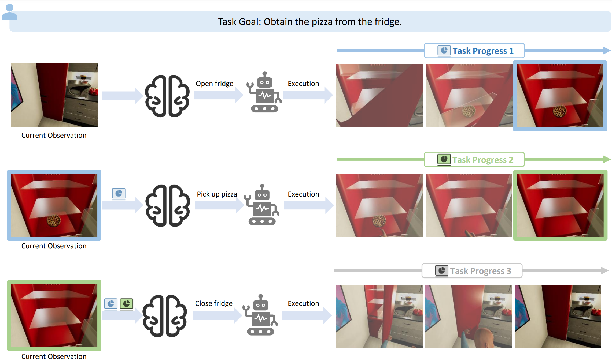

Multimodal Large Language Models, combining the remarkable reasoning and generalization capabilities of Large Language Models (LLMs) with the ability to comprehend visual inputs, have opened up new avenues for embodied task planning. Given diverse environmental inputs, including real-time task progress, visual observations, and open-form language instructions, a proficient task planner is expected to predict feasible actions, which is a feat inherently achievable by Multimodal Large Language Models (MLLMs).
In this work, we aim to quantitatively investigate the potential of MLLMs as embodied task planners in real-world scenarios by introducing a benchmark with human annotations named EgoPlan-Bench. Our benchmark is distinguished by realistic tasks derived from real-world videos, a diverse set of actions involving interactions with hundreds of different objects, and complex visual observations from varied scenes. We evaluate a wide range of MLLMs, revealing that these models have not yet evolved into embodied planning generalists (even GPT-4V).
We further construct an instruction-tuning dataset EgoPlan-IT from videos with human-object interactions, to facilitate the learning of high-level task planning in intricate real-world situations. The experiment results demonstrate that the model tuned on EgoPlan-IT not only significantly improves performance on our benchmark, but can also be applied as a task planner for guiding embodied agents in simulations.
Overview of the construction pipeline for EgoPlan-Bench based on existing untrimmed egocentric videos with detailed action narrations. (1) We first leverage GPT-4 to identify task goals through hierarchical reasoning. (2) We then filter task goals based on the requisite number of actions. (3) The questions are designed in the form of multiple-choice, where the questions are automatically generated based on task goals, and the options are derived from different actions under the same task goal. (4) We employ human annotators to verify each question to ensure the benchmark quality.
Our benchmark comprises a total of 3,355 QA pairs. Drawing upon the attributes of the utilized egocentric video sources, our benchmark exhibits three main characteristics. 1)Realism of Tasks: The tasks are extrapolated from authentic real-world videos, offering a closer reflection of daily human needs and showcasing greater variety than artificially constructed tasks. 2) Diversity of Actions: The benchmark involves a diverse set of actions, requiring interaction with hundreds of different objects and extending beyond basic manipulation skills such as picking and placing items. 3) Intricacy of Visual Observations: The visual observations come across various real-world scenes, where objects vary in appearance, state, and placement.
a) Statistics of the evaluation data of EgoPlan-Bench.
b) Wordcloud of verbs in task goals of EgoPlan-Bench.
c) Top 20 verbs with top 8 related objects in EgoPlan-
Bench candidate actions.
We evaluate a wide range of MLLMs. The results indicate that our EgoPlan-Bench poses significant challenges for existing MLLMs, and there is still a long way to go before these models evolve into generalist embodied task planners.
We further construct EgoPlan-IT, an instruction-tuning dataset, to facilitate the learning of high-level task planning from human videos. The model tuned on EgoPlan-IT not only exhibits a significant performance enhancement on our benchmark, but also shows potential as a task planner for an embodied agent to complete long-horizon tasks within a simulated environment.
@article{chen2023egoplan,
title={EgoPlan-Bench: Benchmarking Egocentric Embodied Planning with Multimodal Large Language Models},
author={Chen, Yi and Ge, Yuying and Ge, Yixiao and Ding, Mingyu and Li, Bohao and Wang, Rui and Xu, Ruifeng and Shan, Ying and Liu, Xihui},
journal={arXiv preprint arXiv:2312.06722},
year={2023}
}